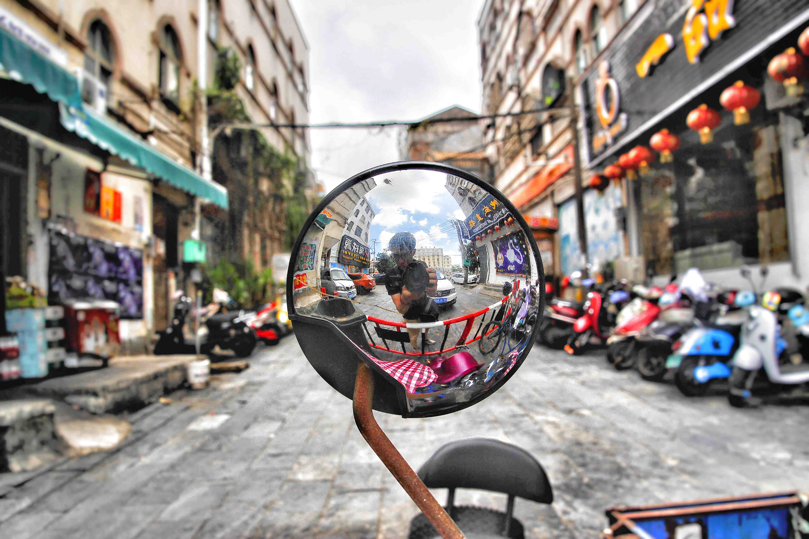

This was my first project. I learned a lot about HTML , CSS and Javascript.And this photo actually was in the wax museum,the man who was standing by me was a wax.
PK
Click the photo
Favorite App Page
This photo was in my junior college's football field.I am an amateur photographer ,so I let them to do their pose .

Selfie
Click the photo
Favorite App Page
This photo was on the mirror of motorcycle,I consider that photo was shock effect.
Tower
Click the photo
Favorite App Page
This photo was in Beihai of China,the tower was standing in the large ground, when I looked up the tower ,it looked like through the sky.I thought it was very beautiful,so I capture it.